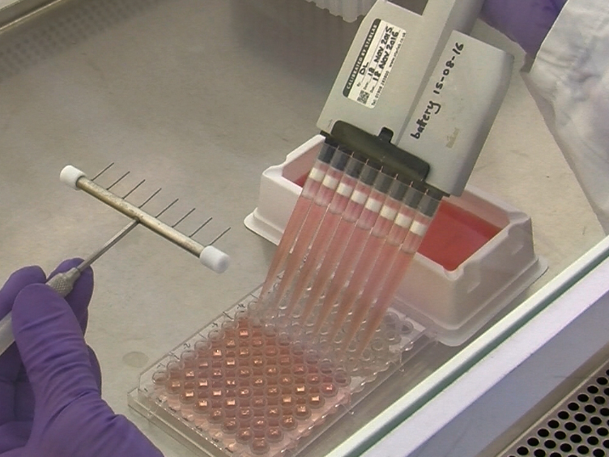
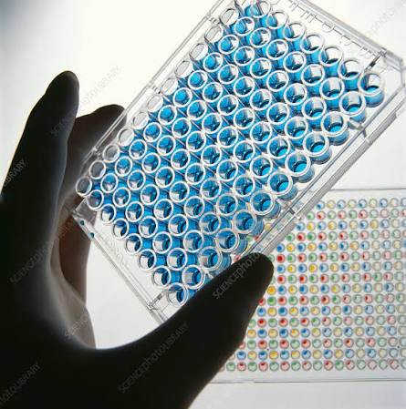

Laboratorio de Inmunobiología de la Tuberculosis
Somos un laboratorio que brinda servicios a laboratorios institucionales y la industria farmacéutica para la evaluación de nuevos productos terapéuticos mediante ensayos inmunológicos
Somos un laboratorio que brinda servicios a laboratorios institucionales y la industria farmacéutica para la evaluación de nuevos productos terapéuticos mediante ensayos inmunológicos
El LIT es un laboratorio mexicano que cuenta con la certificación en la norma ISO-9001 y acreditación en la norma ISO-17025. Por ello, los servicios que ofrecemos son precisos y confiables
El LIT ofrece ensayos inmunológicos acreditados para el análisis de productos biotecnológicos

Pruebas para la detección de anticuerpos neutralizantes con técnicas de microneutralización y reducción focos fluorescentes
Consulta a un especialista
Detección y cuantificación de anticuerpos humanos mediante ELISA para evaluar la efectividad de productos biotecnológicos.
Consulta a un especialistaDetección de la expresión de moléculas de superficie e intracelulares en células de la respuesta inmunológica.
Consulta a un especialista
Análisis estructurado para evaluar la estabilidad e integridad de biofármacos.
Consultar servicio
Monitoreo continuo de muestras bajo condiciones ambientales controladas.
Consultar servicio
Desarrollo y validación de técnicas analíticas conforme a guías internacionales.
Consultar servicioLa infraestructura del LIT cumple con con los estándares internacionales de las normas ISO-9001, ISO-17025 y la OCDE. Contamos con instalaciones adecuadas y equipos calificados y calibrados, lo cual respalda la calidad de nuestros resultados.
Toma un recorrido por nuestras instalacionesEl LIT ofrece una cartera amplia de ensayos inmunológicos para distintas matrices biológicas. Dependiendo del objetivo del análisis y la muestra se selecciona la técnica. Consulta a uno de nuestros especialistas para que conozcas las alternativas.
"Validation of a high-throughput ELISA for neutralizing antibody quantification in biopharmaceutical products."
"Multiplex flow cytometry assays for rapid characterization of recombinant proteins in quality control."
"Comparative analysis of ELISpot and intracellular cytokine staining for cellular immunity assessment."
El LIT cuenta con un amplio número de publicaciones científicas de alto impacto que respaldan la solidez técnica y científica de nuestros ensayos. Nuestro equipo investiga y valida activamente metodologías avanzadas para garantizar la máxima precisión en cada resultado.
Ponte en contacto con nuestro equipo de especialistas para cotizaciones o dudas técnicas.
lit@iner.com
Calzada de Tlalpan 4502, Sección XVI,
Tlalpan, C.P. 14080,
Ciudad de México, México.